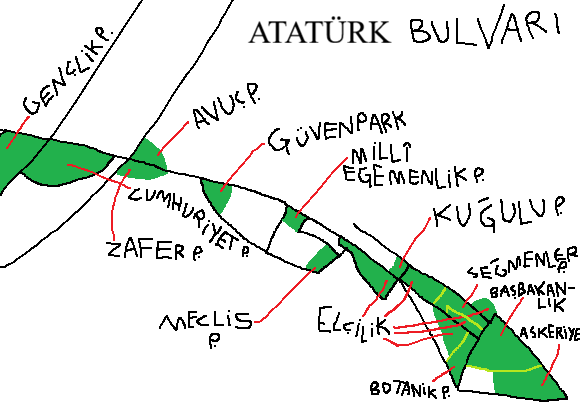

Atatürk Bulvarı; Ankara'nın diklemesine ana caddesidir ve Hermann Jansen'in şehir planı, resmî kurum bahçeleri, askeriye bahçeleri, müteahhitlerin yıkıp gökdelen yapmaya kıyamayacakları binalar ve koruma altında yerleri sayesinde yemyeşil ve gökdelensizdir. Bulvarda tek tük gökdelen olsa bile çoğu resmî kurumdur. Resmî kurum ve askeriye bahçeleri sayesinde enlemesine ana cadde İnönü Bulvarı da hem gökdelensiz (doğusu) hem yeşildir. Sonra da Ankara çok gri diyorlar.